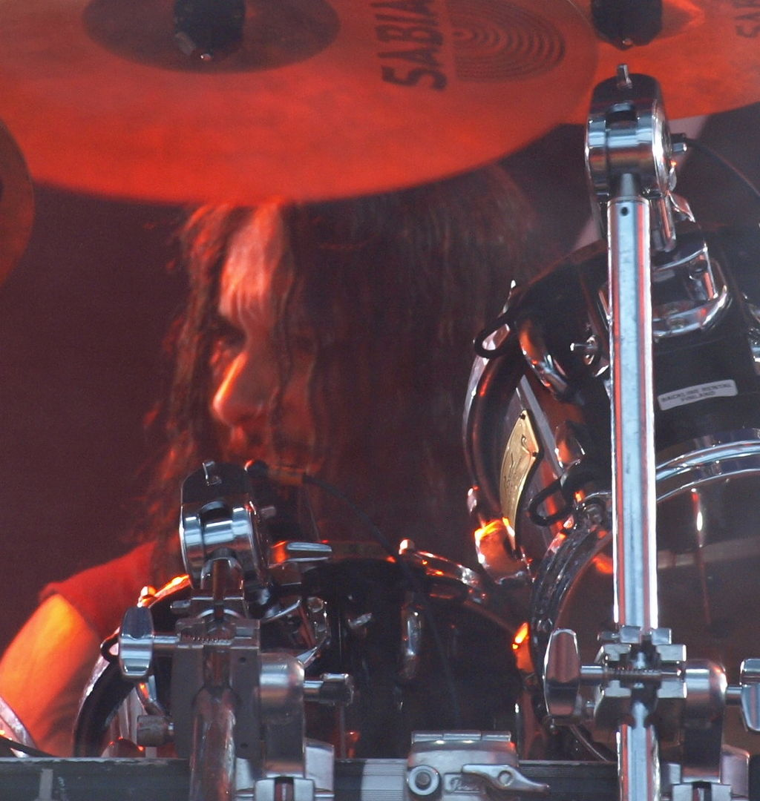
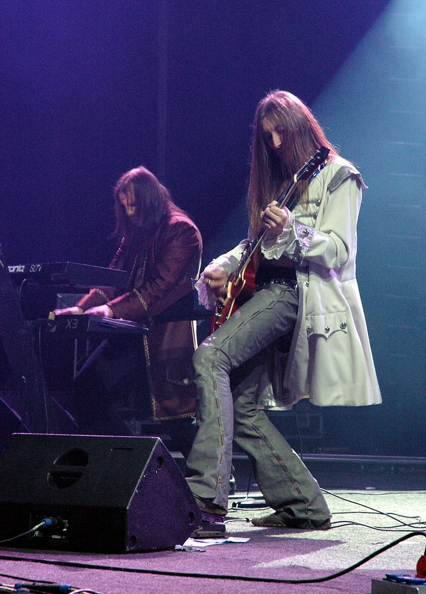
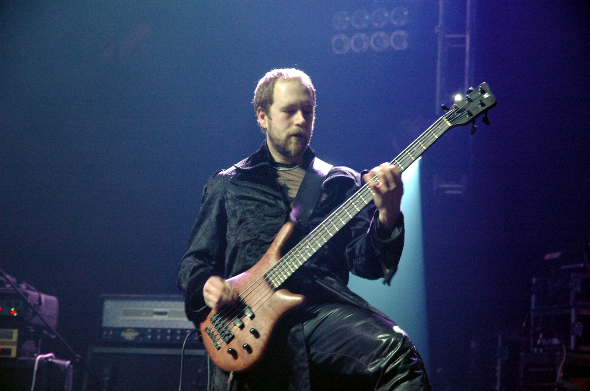
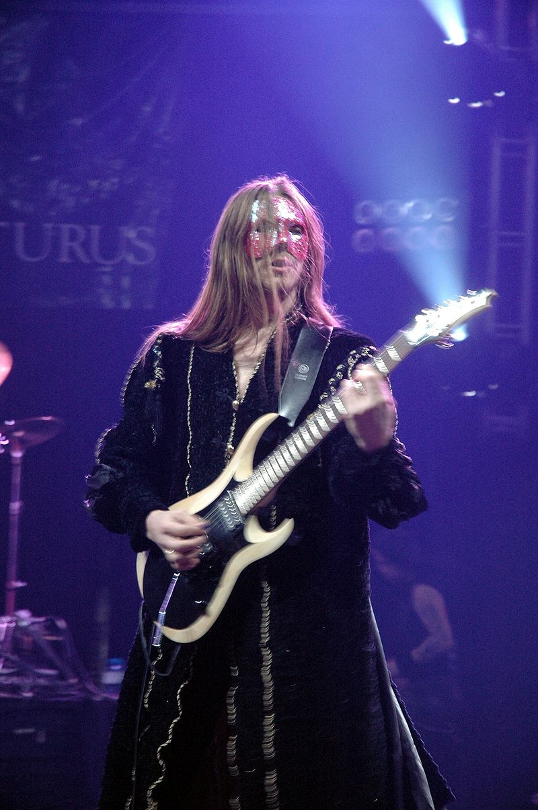
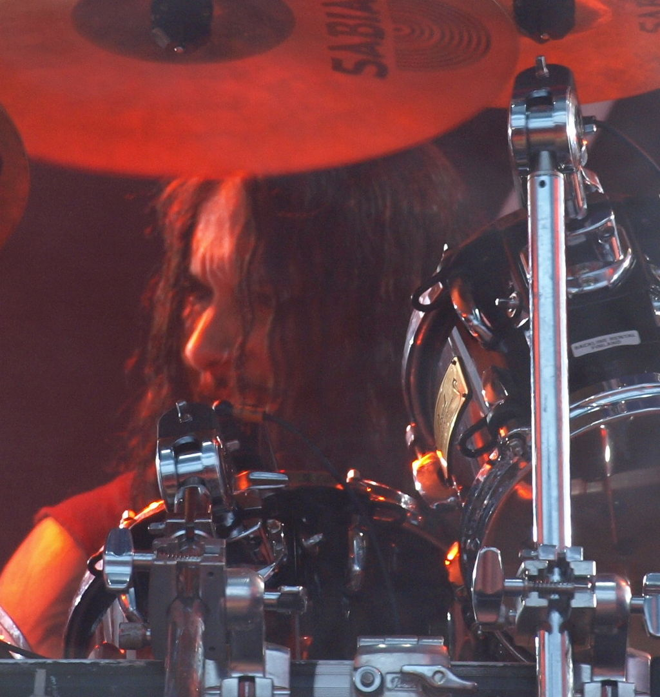
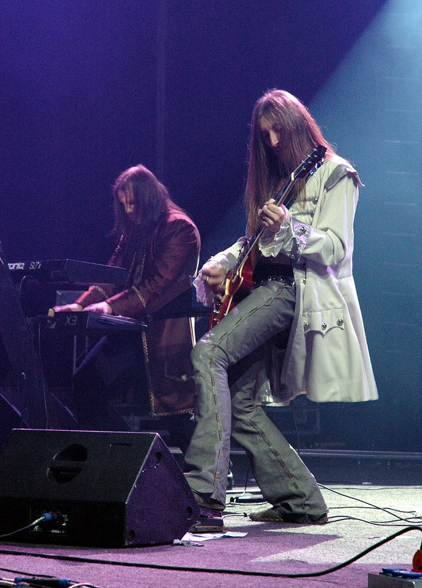
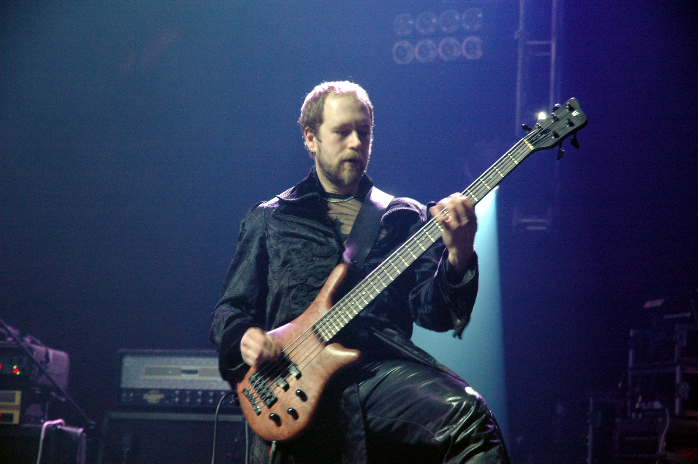
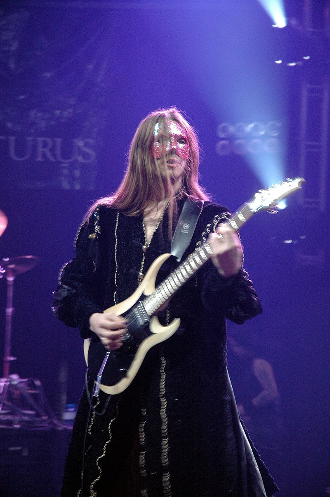

- Home Page
- Exercise 1
- Exercise 2
Contact
- Exercise 3
- Exercise 4
- Band Home Page
- Biography
- Discography
- Equipment
- Video
- Pictures
- Contact Us
Biography
The band has released five official full-length albums. Arcturus has experimented throughout their career, extracting influences and incorporating elements from all over the musical spectrum including black metal and classical music, but the band was rooted as a metal outfit.
Early days
The original line-up was changed when bassist/vocalist Marius Vold (formerly of Thorns) was taken out of the band. The band soon became labeled a black metal supergroup, consisting of Kristoffer "Garm" Rygg on vocals, Carl August Tidemann on guitar, Skoll on bass and the two other original members, Hellhammer on drums and Steinar Sverd Johnsen as main composer/keyboard player. In 1994, Samoth played guitars on the EP Constellation and released it on his record label, Nocturnal Art.
Post-Garm era
After three full-length albums, Rygg left the band. He was replaced by Øyvind Hægeland from the band Spiral Architect. Øyvind performed live with the band, but did not appear on any recordings. On January 5, 2005, the band announced that Øyvind had moved too far away for his continued involvement to be practical and they had parted ways. He was replaced by Simen "ICS Vortex" Hestnæs, who had previously performed vocals on three Arcturus tracks ("Master of Disguise", "The Chaos Path" and "Painting My Horror") on La Masquerade Infernale. Upon Carl August Tidemann's leaving the band, Knut Magne Valle joined. In 2003, Tore Moren joined on second guitar for live performances and eventually found himself accepted as an official member of the band. Knut and Tore then shared lead duties on guitar, with Knut on 7-string guitar and Tore using a standard 6-string guitar.
Breakup
On April 16, 2007, it was announced that the band would be breaking up, and more details were revealed in an official statement released on the band's website on April 17. The official statement was written by all of the band members, confirming rumours that had been circulating after their Melbourne concert, the last one of the Australian tour, in which ICS Vortex introduced the show to the audience with the words "Welcome to the last Arcturus show — ever." The statement went on to say that the split was a "decision we made some time ago", and that because of ongoing "things" in their careers and lives, the members could no longer "find the time to continue working with this band". The statement closed with a tribute to the fans of the band, "We are humble and grateful to all the people that have supported and loved us over the years."
Reunion
There were rumours circulating the internet that Arcturus may reform with Garm as the vocalist. Hellhammer confirmed that an Arcturus reunion was inevitable, and that Garm had shown interest in participating. Garm later indicated he was not interested on his personal Facebook page. Furthermore, ICS Vortex mentioned that he had plans to resurrect "a band or three" in a blog he posted shortly after being removed from Dimmu Borgir. Vortex also stated on his Myspace page that he was told by an alien that regarding an Arcturus reunion, 2011 is a lucky number. ICS Vortex confirmed an Arcturus reunion show at ProgPower USA 2011 Festival. In addition, Vortex also said "Beloved freaks! ProgPower USA 2011 will host the first Arcturus concert in 5 years. This is our first performance in the United States, and since we`re all retarded, probably the last." The show was later cancelled due to "hibernation sickness" and "outdated parts".[7] Arcturus was supposed to play its first reunion show at Avant-Garde Night vol. 2 in Poland,[8] but it was cancelled and they rescheduled show to January. They played a show September 9, 2011 at the KICK Nattklubb & Scene in Kristiansand, Norway. When asked about it by a fan on his personal Facebook, Vortex said "yes I can confirm once again that Arcturus is on" In 2012, they went on to perform shows at the Inferno Metal Festival, Hellfest Summer Open Air, the 02 Academy, Islington and Eindhoven Metal Meeting. In an interview published by Lords of Metal webzine, ICS Vortex says Arcturus are working on a new album. On April 11, 2014, Arcturus confirmed themselves to be recording vocals for their new album in a post on Facebook. On October 10, 2014, Arcturus confirmed on Facebook that ICS Vortex finished recording vocals for the album. On November 25, 2014, it was confirmed that Arcturus would perform live at the 2015 edition of Maryland Deathfest, Baltimore, USA. After much speculation on the internet amongst fans, on 26 February 2015, it was announced that Arcturus had signed a new recording contract with German record label Prophecy Productions and that they would finally release their new album "Arcturian" on May 8. The label commented: ″Arcturus are legend. Unparalleled in creativity, musicianship and artistic approach since their foundation days, mastermind Steinar 'Sverd' Johnsen and his cosmic crew consisting of past and present members of bands like Ulver, Mayhem, Dimmu Borgir, Borknagar and Ved Buens Ende have been dancing their very own tightrope between genius and madness ever since. With each of their releases being an interstellar journey of its own, and always ahead of their time, Arcturus can justifiably be labelled as the epitome of avant-garde metal...″ On March 27, 2015, Arcturus released the first single from Arcturian called "The Arcturian Sign". The album 'Arcturian' then entered at place #15 in the Official German Album Charts.
Band Members
 






